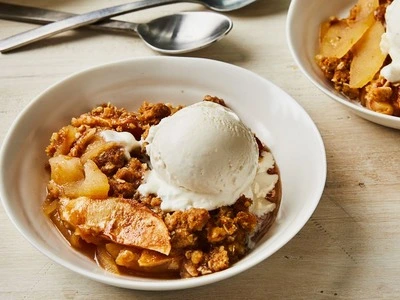

dessert
APPLE CRISP
This apple crisp recipe is a simple yet delicious fall dessert that's great served warm with vanilla ice cream.

dessert
This apple crisp recipe is a simple yet delicious fall dessert that's great served warm with vanilla ice cream.